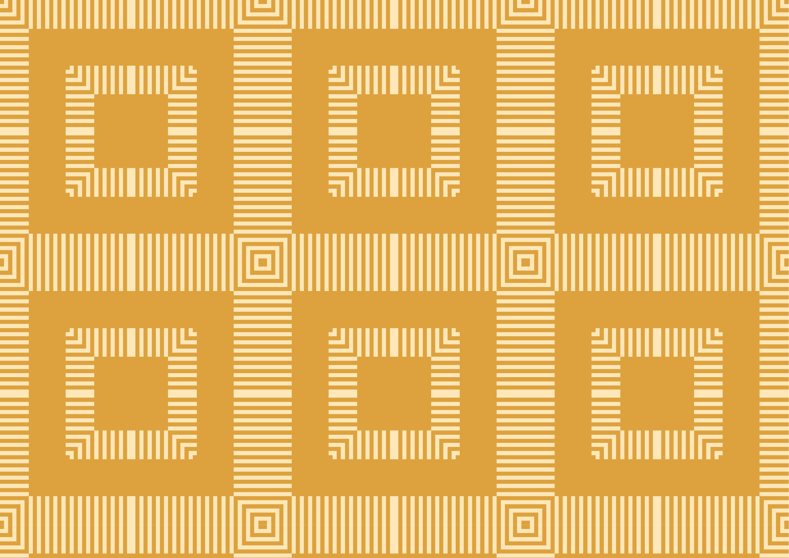
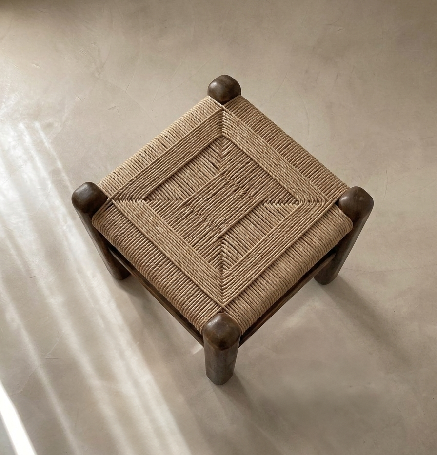
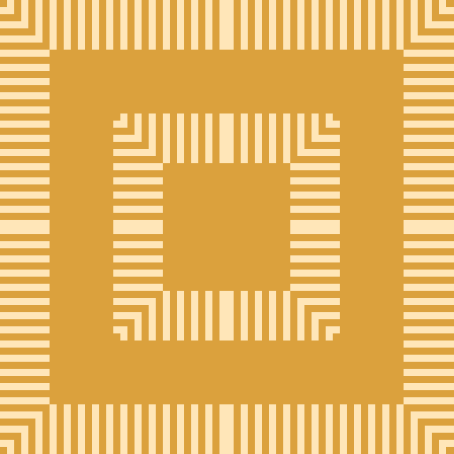
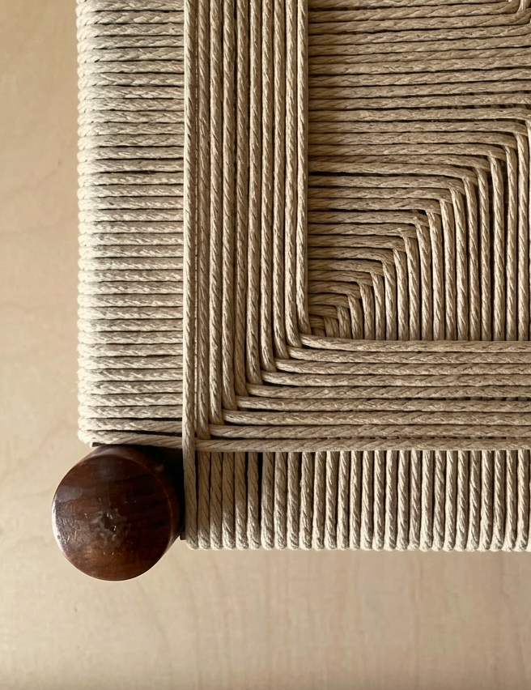

In 2012, Zara could design, produce, and deliver a new garment in fourteen days. Shein has reduced that to ten. The average fast fashion garment has a useful life of less than twelve months, and is worn an average of seven times before it is discarded.
This is not a supply chain, it is a replication system. Industrial fast fashion production is built on the elimination of variation: every garment identical to the last, every batch identical to the previous one, the same process repeated at a scale that makes individual objects meaningless.
The speed is not incidental. It is the product. The faster the cycle, the more product moves, and the more product moves, the faster the cycle needs to become.
Placed directly after "Wool Production", this piece is the contrast. Where that pattern is slow, low, and restrained, this one is dense, replicated, and maxed out. Same system, opposite values. The difference between the two patterns is the difference between the two ways of making clothes: one that respects the time it takes, and one that has abolished it.


